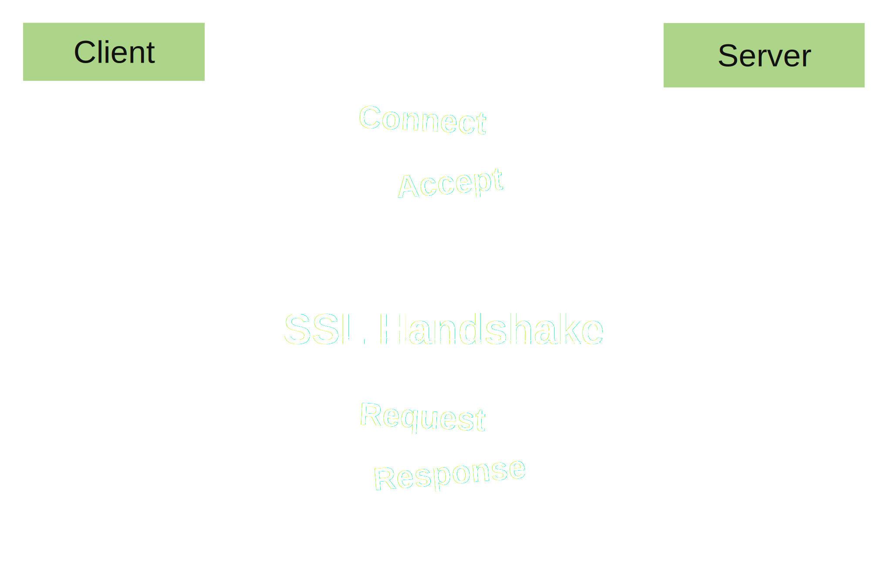
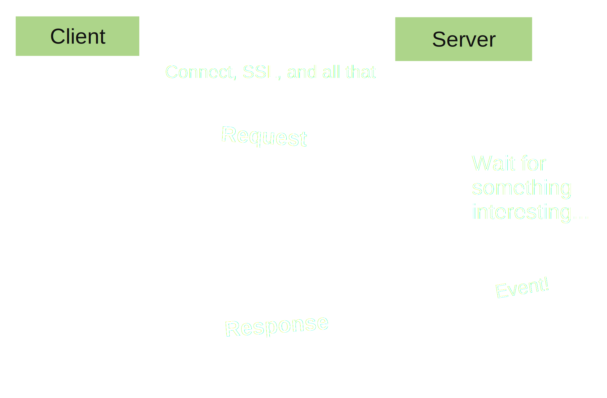
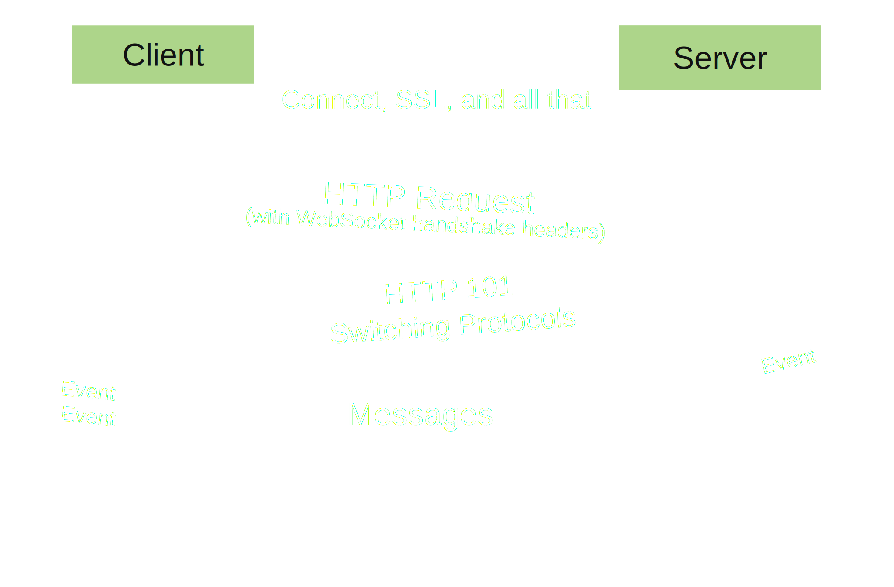
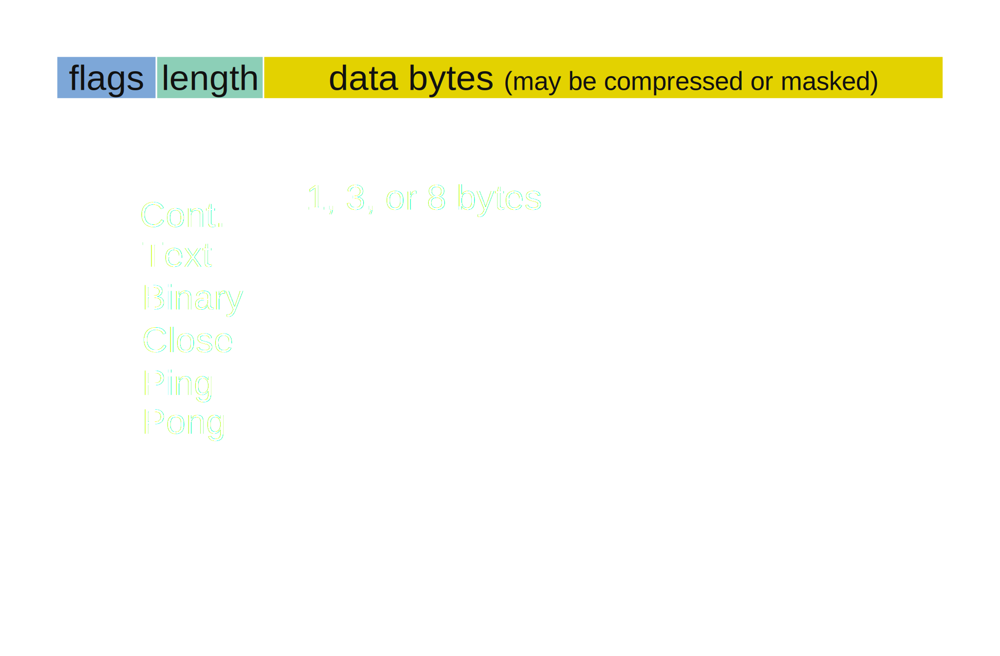

A survey of the current state of WebSockets in Perl 5
Michael Conrad
mike@nrdvana.net
CPAN: NERDVANA
github.com/nrdvana/wide-world-of-websockets
Overview
Purpose and Design of WebSockets
Event Driven Programming and Concurrency
Available Implementations in Perl5,
Benefits / Limitations.
HTTP Request Lifecycle

Familiar to most
Client starts TCP & SSL,
maybe re-use
Client requests resource
Server procs req and responds
Always client-driven.
What if client wants to listen?
HTTP Long-poll "Comet"

Client starts request
Server waits until it has something
Client renews to keep listening
Limited number of connections per server
New request means re-authenticating session
Doesn't work well for certain problems...
Example: Chat
Most common example of websocket
Minimal delay on chat messages
Not much improvement over Comet
Avoids "stampede" of new requests
Example: Monitoring
Small frequent data blocks would
be really inefficient with Comet
Example: Games
Just like previous, but bidirectional
Example: Intelligent File Upload
https://webdeltasync.github.io/
Like rsync.
JavaScript can hash file locally
only transfer new parts of file.
Fast round-trips referring to same file
Would be waste to hit different worker each time
Example: Mining BitCoin on Browsers
Example: iPad Apps
(like these slides!)
iPad closed system, no perl
can write web-apps
event-driven is best model for UI
Why Not TCP
Huge potential for abuse
SSL implementation?
Framing/parsing efficiency
Just want plain "messages"
Want sockets for javascript
Huge potential abuse
Something safe, with SSL
SOCK_SEQPACKET would be nice
WebSocket Design

Starts as an HTTP(S) request
Server responds with accept/decline
Magic key isn't crypto, just cache busting
Earlier versions did messy stuff; ignoring
Changes protocol from command/response to peer-to-peer
Messages are framed, not pure streams
Remains within SSL-encapsulated connection
WebSocket Message

WebSocket Tradeoffs
Small payload overhead, quicker transfer
Faster processing because state is preserved
Loses stateless benefits of HTTP
Preserving state speeds up handling
Lose benefits of "Stateless"
WebSocket Adoption
Proposed in 2008
Revised several times up to 2012
Final version
Browser
Available Since
IE 10
Win 8, Win7 on 2013-02
FireFox 11
2012-03
Chrome 16
2011-12
Safari 6
2012-07, OS X Mountain Lion
Opera 12.10
2012-06
Android 4.4
2013-09
Back-compat (flash) using
https://github.com/gimite/web-socket-js
Nearly ubiquitous now
Most old phones gone
Most old Macs gone
Opera matters for Wii
Flash workaround if you care
WebSockets In Perl
But First...
Now you know what a websocket is and why you would use it.
Goal of this talk is to show all the ways to do websockets in
Perl and discuss pros/cons.
However, many of the challenges involved with WebSockets are
the more general challenges involved with Event Driven Programming
and concurrency, so I'm going to review those topics first, to
make sure everyone on same page and using the same terminology.
Event Driven Programming
Any program where next action is determined by
the type of event it receives is "event-driven".
But, any program that performs I/O is esentially
"event-driven" as well.
But most people mean "cooperative-multitasking"
when they say "event-driven".
* The most basic type of program is one that runs one algorithm to calculate
an output from an input.
* You know all steps the program might take in advance, and write the code for
that sequence of steps. If you need data that isn't immediately available,
you "block" the program until it is and then continue the sequence of steps.
* The other main kind of program is one whose progessing depends on external events.
The program has no goal aside from responding to events with various behavior.
* A web server is a form of event-driven program that we're all familiar with.
* The web server waits for client requests, then runs the request to completion and
sends a response.
* Each perl web framework is an exampe of some manner of tackling the problem of
how to link an incoming event to the relevant code.
Concurrency
Multiple Processes
Multiple Threads
Cooperative Multitasking
* Most of the time, you want an event-driven program to be able to respond to
multiple events at once, so that short events don't have to wait for longer
events to finish. Or, just for capacity.
* Three main strategies are:
* Multiple independent processes which each process one event at a time
(usually coordinated via filesystem or database)
* Multiple threads where each thread processes one event at a time
(coordinated via shared data and synchronization "objects")
* Single thread written in non-blocking style
* Pro/Con matrix of each mechanism
* Perl doesn't get option 2, because no threads. (But I don't really want it anyway,
because multithread synchronization is a mess.)
* Frameworks like Plack, Catalyst and Dancer use option 1, though you can get option 3
if you try hard enough.
* Frameworks like Mojo lend themselves naturally to option 3, though not required.
Event-driven Concurrency
Blocking, Multi-Thread
Non-blocking, Event Loop
One thread (or process) for
each external event.
Thread blocks while waiting
on internal events.
Program makes a list of all
pending external and internal events.
Asks Kernel to wake it up when
any event is ready.
Many threads are expensive
Internal events like DNS lookups, database queries
When kernel signals ready condition, app must now
dispatch between middles of event handlers.
Event-Driven Concurrency
Multi-Thread
Event Loop
Pros
Parallel processing
Immediate dispatch
Obvious to write
Easy shared data/state
Scales to many events
Easy debugging (maybe)
Cons
Non-obvious bugs
Slow shared data
Awkward cancellation
Development effort
Scalability
No parallelism *
Awkward code flow
Can't use blocking APIs
Multi-thread Pro
things can run in parallel
Every event "ready to run"
natural pattern of fn call
Multi-thread Con
segfaults, deadlocks, races
shared data structures need locks
as seen in Java
killing thread is awkward
obvious pattern has many non-obvious pitfalls
One thread per event doesn't scale
Eventloop Pro
Single thread, so simple data structures
Per-event cost is just items in a list,
so can scale up to extreme number of events.
Single-thread easier to debug than multithread,
but "easy" depends on abstraction
Eventloop Con
every event must process quickly
(can fork for expensive processing)
Must divide subroutines into
per-event pieces
blocking APIs: DBIC DNS
Perl6 attempts fixing multithread
Go attempts hybrid approach
while (!$terminate) {
my $need_read= make_fh_bitvector( map $_->{read_fh}, values %tasks );
my $need_write= make_fh_bitvector( map $_->{write_fh}, values %tasks );
my $check_err= combine_bitvectors( $need_read, $need_write );
my $timeout= min( map $_->{wake_time}, values %tasks );
$ret= select( $need_read, $need_write, $check_err, $timeout );
for ( values %tasks ) {
if ( bitvector_contains_fh( $need_read, $_->{read_fh} ) ) {
$_->{code}->() // run the callback
}
...
if ( $_->{wake_time} < time) {
$_->{code}->()
}
}
wrote simple example, still to messy
making even simpler example to skip detail
(explain)
In addition, there are signals, and child proc
Also want a better API to register the callbacks
Event Loop Implementations
LibEV
Gtk
Glib
...etc
Lots to choose from
LibEV particularly good
But There Can Be Only One
Need to adapt modules to any event loop
Event Loop Wrappers
POE
AnyEvent
IO::Async
Mojo
POE oldest, longest back-compat
Bit awkward, best handling of refs
AnyEvent is most minimal,
heavy callbacks, some social drama
extensive CPAN ecosystem
IO::Async is a bit of a hybrid
also good cpan ecosystem
WebSockets In Perl
(finally)
WebSocket Protocol Util
Protocol::WebSocket
Net::WebSocket
Mojo::WebSocket
Stand-alone Servers
AnyEvent::WebSocket::Server
Net::Async::WebSocket (IO::Async)
POE::Component::Client::WebSocket;
Net::WebSocket::Server
Stand-alone with AnyEvent
use AnyEvent::WebSocket::Server;
my $server= AnyEvent::WebSocket::Server->new(
handshake => sub {
my ($req, $res)= @_;
... # decide whether to accept
return $res, ...; # can append calculated values
},
);
AnyEvent::Socket::tcp_server undef, 5000, sub {
my ($fh)= @_;
$server->establish($fh)->cb(sub {
my ($conn, ...)= eval { shift->recv };
if ($@) {
warn "Rejected connection: $@\n";
close($fh);
return;
}
$conn->on(each_message => sub { ... });
$conn->on(finish => sub { ... });
});
};
PSGI
No explicit support??
Ask for "Responder", then don't use it.
Plack's WebSocket implementation invokes
responder after closing the socket.
Twiggy seems ok with this.
Twiggy is the only PSGI server I know of
that supports WebSockets anyway.
Plack
Plack::App::WebSocket->new(
on_error => sub {
my $env = shift;
return [500,
["Content-Type" => "text/plain"],
["Error: " . $env->{"plack.app.websocket.error"}]];
},
on_establish => sub {
my $conn = shift; ## Plack::App::WebSocket::Connection object
my $env = shift; ## PSGI env
my $hs_res = shift; ## extra results from the handshake callback
$conn->on(
message => sub {
my ($conn, $msg) = @_;
$conn->send($msg);
},
finish => sub {
undef $conn;
warn "Bye!!\n";
},
);
}
);
Web::Simple
Plack based...
Just return the same thing when
websocket URI is requested.
Dancer
No (real) support.
Has Dancer2::Plugin::WebSocket,
...but just a wrapper around plack
No Dancer session or Request
during handshake
Only one websocket URI per app.
Catalyst
No support
..unless you call some private
methods on Catalyst internals.
Mojolicious
Excellent Support
Mojo was written specifically
for non-blocking needs.
Slides and demos are written in Mojo
CGI
Can actually work if user pool is
small enough and server is big enough.
Might be useful for legacy code
that needs to block.
Hybrid
Why Make Monoliths?
Use Traefik / Nginx / Apache to divide application according to need.
Handle normal web requests in Catalyst/Dancer
Handle websocket messages in Mojo or stand-alone
Link it all together with Postgres event notifications